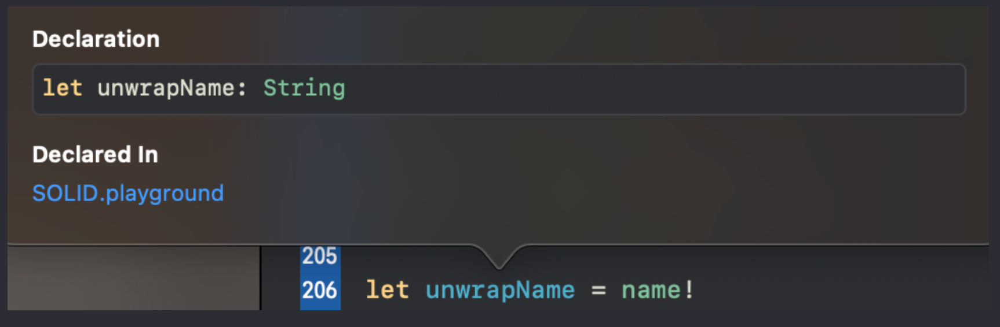

Урок 14. Опциональные типы
3 Февраля 2023

Загрузить материалы к уроку.
Опциональный тип – это специальный тип данных в языке Swift, который может содержать либо значение, либо отсутствие значения (nil). Они обозначаются знаком вопроса после типа данных (например, Int?). Это позволяет вам проверять наличие значения перед использованием и избегать возникновения неожиданных ошибок.
Звучит не просто, но давайте разбираться
Создадим несколько опциональных свойств:
Опционал в Swift представляет из себя объект – контейнер, который может содержать в себе либо nil, либо значение конкретного типа, который указывается при объявлении этого объекта. То есть в нашем случае свойство name будет содержать в себе либо nil, либо значение с типом String. Свойство age, будет содержать либо nil, либо значение с типом Int и так далее.
Если мы этим свойствам не присвоим какое-либо значение его типа, то оно будет иметь значение по умолчанию nil.
Что же такое nil – это своего рода заглушка для компилятора, которая позволяет оставлять свойства без значений
Зачем же нам нужны эти опциональные типы данных?
Давайте посмотрим на следующий пример:
у нас есть массив целых чисел, и свойство maxNumber, которое хранит максимальное значение этого массива, так как мы использовали метод max()
и если мы посмотрим тип данных свойства maxNumber, мы увидим что это опциональный Int:
Xcode определил для свойства тип поционального Int. Это сделано для безопастности. В том случае, если массив вдруг окажется пустым, а вы применяете к ниму данный метод, то свойство просто примет значение nil.
Таким образом свойство maxNumber может содержать либо nil, либо какое то целое число.
При этом обычный тип данных и опциональный – это разные типы данных и вы не сможете присвоить опциональный Int? свойству с типом Int. Если попытаться это сделать, то Xcode выдаст ошибку о несоответсвии типов данных:
Свойство integer имеет тип Int, а maxNumber является типа Int?, вы в этом можете убедится, если зажмете option и кликните по свойству, это будут разные типы данных.
Свойство обычного типа не может принять опциональный, потому что там может быть либо nil либо реальное значение, тогда как свойство integer ожидает только Int. А вот обратная ситуация работает хорошо:
Потому что maxNumber, является контейнером и может принимать и nil и обычный Int.
Давайте рассмотрим еще один пример на этот раз со словарем.
у нас есть словарь, и следующим действием мы присваиваем свойству ageOfTim значение из словаря по ключу “Tim”, если вы посмотрите на тип данных этого свойства, то вы обнаружите что это опциональный Int:
А все потому что Xcode себя снова обезопасил, ведь такого ключа может не оказаться в словаре, и в таком случае свойство ageOfTim примет значение nil.
Давайте немного побудем в шкуре системы. Программист ставит перед нами задачу, создать свойство ageOfTim и положить в него значение из словаря по определенному ключу, если бы мы не работали с опционалами, это выглядело бы следующим образом: Мы зарезервировали ячейку ageOfTim, отправились в ячейку памяти словаря, искать нужный нам ключ. Приходим туда, а там такого ключа нет, что же нам теперь делать? откуда взять значение? Что положить в свойство = ageOfTim
В таких случаях мы определяем свойство как опциональное и просто ставим заглушку nil, это говорит нам о том что свойство не содержит ни какого значения.
Отсюда следует вывод, когда система не уверена в том что получит какое либо значение, она определяет свойство как опциональное.
Зачем опциональные типы в реальной разработке?
Хорошо, с системой все понятно, она просто пытается себя обезопасить, но зачем нам самим создавать опциональные свойства?
Давайте представим что мы разрабатываем приложение, и в качестве входного экрана определяем форму регистрации. Пользователь вносит свои данные, имя, возраст, статус и так далее, и нажимает кнопку, после чего попадает на экран приветствия: ” Привет, Федор!” и все его внесенные данные. При разработке мы не знаем кто конкретно зарегистрируется в приложении и кого прописывать в приветствии. Но изначально нам нужно создать свойства, которые будут хранить эту инфу:
Мы их определяем как опциональные, а инициализировать их будет пользователь, когда внесет эти значения в текстовые поля.
У вас может возникнуть резонный вопрос, зачем создавать опциональные свойства, если можно задать значения по умолчанию, в виде пустой строки или нуля. И это может сработать, но если у нас есть не обязательные поля для заполнения, в таком случае, в поле возраст пользователь будет видеть 0, а в качестве статуса будет по умолчанию логическое значение, которое пользователь не хотел отмечать. Удобней было бы оставить пустые поля, и с этим отлично справляются опциональные значения.
Опционал – это контейнер, который содержит в себе два значения nil и значения того типа, который мы определили перед вопросительным знаком.
Не опциональное свойство не может присвоить к себе опциональное, а опциональное присвоить не опциональное может.

Извлечение опционального значения
Опциональную переменную в Swift нельзя использовать точно так же, как неопциональную (за исключением неявно извлекаемых опционалов, но об этом чуть позже).
Так как опциональные свойства могут иметь значения, как своего типа, так и nil то что бы с ними работать, нам необходимо извлекать значение своего типа, то есть из “контейнера” достать только конкретное значение.
После извлечения свойство становится не опциональным, и существует несколько способов извлечь опциональное значение.
Вернемся к нашему примеру со словарем:
Свойство ageOfTim опциональное. В данном случае Xcode сообщает нам желтым ворнингом о том, что мы используем опциональное свойство и оно не всегда может иметь значение, поэтому нам надо позаботиться о том, что выводить на консоль в том случае, если свойство будет иметь nil. Опциональное значение всегда нужно извлекать перед использованием, и есть несколько способов это сделать.
Давайте разберем самые безопасные и предпочтительные, а потом перейдем к плохой практике.
Значение по умолчанию
Самый быстрый и простой способ это задать значение по умолчанию и делается это следующим образом:
после опционального свойства прописываем два вопросительных знака, после которых определяем значение по умолчанию. Значение по умолчанию должно быть такого же типа что и опциональное свойство.
Давайте для понимания создадим 4 опциональных свойства и извлечем из них опциональное значение этим способом:
Первые три свойства хранят в себе конкретные значения, а свойство status не содержит значения, а хранит в себе nil, то есть значения там нет. Если вы запустите компилятор и посмотрите в правое окно:
Если в свойстве не окажется значения, то компилятор возьмет то значение, которое вы определите после двух вопросительных знака. Давайте присвоим эти значения другим свойствам и посмотрим на их тип данных:
Эти свойства уже не будут опциональными, мы извлекли значение, давайте в этом убедимся, зажимаем option и кликаем по свойству:
Эти четыре константы теперь не опциональные, мы извлекли значение и присвоили его новому свойству. (посмотрите на тип каждого из свойств)
Опциональная привязка
Есть еще один хороший способ извлечь опциональное значение, и называется он опциональная привязка. В этом случае нам нужно использовать условную конструкицю if, логика будет следующей:
Давайте разбираться что здесь написано. после ключевого слова if мы определяем условие, на первый взгляд это не покажется вам условием, а скорее присвоением значения новому свойству. По факту так и есть мы пытаемся новому свойству присвоить значение из опционального свойства, и если у нас это получается, то в фигурных скобках мы можем работать с новым свойством, уже не опциональным.
Вот реальный пример:
у нас есть массив, максимальное значение которого мы передаем в новое свойство maxNumber, и это свойство будет опциональным, потому что не факт что массив вообще имеет какие – либо значения:
И мы извлекаем опциональное значение при помощи конструкции if:
если в свойстве maxNumber есть значение, то произойдет Присвоить значение - после имени ставим равно и пишем какое-то значение ✍присвоение свойству unwrapMaxNumber этого значения, и выражение после if вернет true, если же в свойстве maxNumber будет nil, то выражение после if вернет false, и присвоения не произойдет.
Не пытайтесь понять механизм возврата логического значения выражения после if, эта логика вышита глубоко в систему, вам нужно просто запомнить это действие и использовать для извлечения опционального значения.
Давайте проследим каждый шаг данного выражения:
в maxNumber есть значение, а это значит что оно будет присвоено новому свойству unwrapMaxNumber, и само выражение вернет true. Мы с вами знаем что если выражение после if возвращает true, то срабатывает блок кода в фигурных скобках. Свойство unwrapMaxNumber будет хранить в себе извлеченное значение, которое не будет опциональным:
то есть мы передали значение из maxNumber новому свойству, при этом maxNumber все так же осталось опциональным, но мы используем внутри фигурных скобок уже извлеченное значение, то есть новое свойство.
Свойство unwrapMaxNumber будет доступно только в пределах условной конструкции if, в том блоке к которому относится выражение:

то есть мы передали значение из maxNumber новому свойству, при этом maxNumber все так же осталось опциональным, но мы используем внутри фигурных скобок уже извлеченное значение, то есть новое свойство.
При таком решении мы увидим на консоли значение 8. Но что если в нашем массиве не будет значений, а мы запустим опциональную привязку:
В таком случае на консоли мы ничего не увидим, а все потому что нам не удалось передать новому свойству значение, потому что свойство maxNumber содержит nil:
Присвоения не произойдет, и выражение после if вернет false, а это значит что блок кода в фигурных скобках не будет выполнен и мы не увидим результат на консоли.
Есть негласное правило при извлечении при помощи опциональной привязки, называть новое свойство, точно так же как и опциональное:
новое свойство локальное, а опциональное глобальное, поэтому никакого конфликта не будет. Внутри фигуных скобок мы используем новое уже не опциональное свойство.
Плохие способы извлечения
Мы с вами рассмотрели самые используемые варианты извлечения опционального значения, теперь давайте сосредоточимся на не желательных, которые вы можете встретить в чужом коде.
Первый способ называется принудительным извлечением. Мы просто ставим восклицательный знак после опционального значения:
Такой способ не безопасный, потому что если мы в коде будем работать с этим свойством, а там значения не окажется, то наша программа упадет с критической ошибкой. Следующий код приведет к падению программы:
компилятор использует, принудительно извлеченное, опциональное значение, а там его не оказывается, ему нужно сравнить конкретное значение с цифрой 8, а у него этого значения нет. Ему ничего не остается как упасть с ошибкой. Когда мы ставим восклицательный знак мы как будто говорим компилятору, что там сто процентов есть значение, компилятор нам доверяет, и продолжает свою работу, в данном случае мы не оправдали его ожидания.
Давайте еще несколько значений извлечем таким способом, для общей картины:
Последние четыре свойства теперь не опциональные:
Но как мы уже выяснили выше, если вдруг там окажется nil, а ты это свойство где то используешь, то программа упадет с критической ошибкой.
Есть еще одна полумера, как сделать код менее опасным, при работе с опционалами. Можно сделать проверку на nil, и потом уже извлечь опциональное значение:
Вы сперва проверяете есть ли в свойстве nil, а внутри производите принудительное извлечение. Это так же плохой способ, хоть и менее опасный. В дальнейшем, когда мы будем работать с реальными проектами, я вам покажу опасность такого подхода.
Ну а пока всегда используйте для извлечения значение по умолчанию и опциональную превязку.